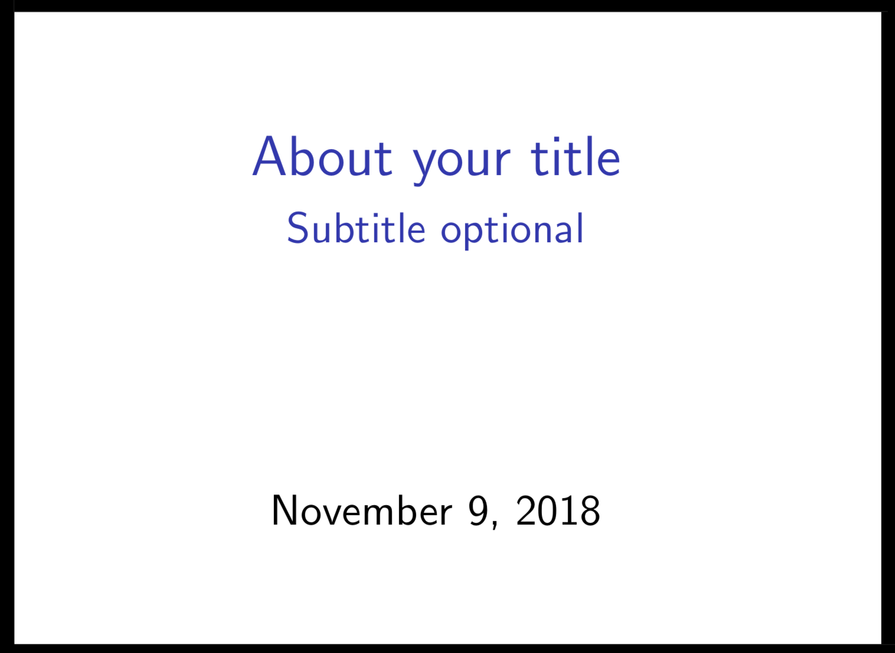
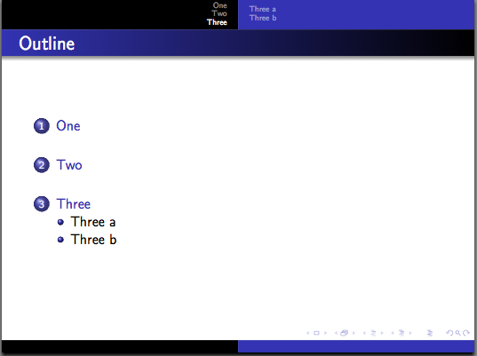

\documentclass{beamer} BEAMER
What is the Beamer?
Beamer is a LaTeX class to create powerful, flexible and nice-looking presentations and slides.
This article explains the most common features to create a presentation: make the title page, add a logo, highlight important points,
make a table of contents and add effects to the presentation.
Structure
Title page and information
You can set the title of your presentation by putting the code below(Must be in brackets!).
Of course the subtitle is not required to have a title so you can omit it if not necessary:
\title[Your title] {About your title}
\subtitle{Subtitle optional}

You can of course add the authors/author names and surnames or even the initials.
There is also an option to reference where each of the person works for/studies.
\author {C.D.Spiace\inst{1}}
\institute{\inst{1}Faculty name\\Uni}
The date is always displayed in default when you set the document as Beamer but you can display it also like this:
\date[Rome, 2018]

Table of contents
It's always better to divide your presentation into parts (sections) if the presentation is too long. Therefore you can create sections,subsections or subsubsections
the style used in this slide can be set like this:
\usetheme{Warsaw} and the package \usepackage{graphicx} is required.
\section{One}
\begin{frame}
\frametitle{ff}
\end{frame}
\section{Two}
\begin{frame}
\frametitle{ff}
\end{frame}
\subsection{Two a}
\begin{frame}
\frametitle{ff}
\end{frame}
\subsection{Two b}
\begin{frame}
\frametitle{ff}
\end{frame}
\section{Three}
\begin{frame}
\frametitle{ff}
\end{frame}
